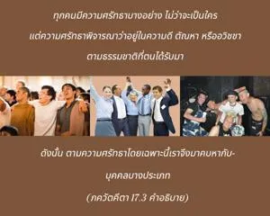

โอ้ โอรสแห่ง ภรต ตามความเป็นอยู่ภายใต้ระดับต่างๆของธรรมชาติ เขาวนเวียนอยู่กับความศรัทธาบางชนิด กล่าวว่าสิ่งมีชีวิตอยู่ในความศรัทธาบางชนิด ตามระดับที่เขาได้รับมา

ทุกคนมีความศรัทธาบางอย่างไม่ว่าจะเป็นใคร แต่ความศรัทธาพิจารณาว่าอยู่ในความดี ตัณหา หรืออวิชชา ตามธรรมชาติที่ตนได้รับมา ดังนั้นตามความศรัทธาโดยเฉพาะนี้ เราจึงมาคบหากับบุคคลบางประเภทดังที่ได้กล่าวไว้ในบทที่สิบห้า ความจริงคือ ทุกๆ ชีวิตเดิมทีเป็นละอองอณูขององค์ภควานฺ ฉะนั้น เดิมทีตัวเราเป็นทิพย์อยู่เหนือระดับแห่งธรรมชาติวัตถุทั้งหลาย แต่เมื่อลืมความสัมพันธ์กับบุคลิกภาพสูงสุดแห่งพระเจ้า และมาสัมผัสกับธรรมชาติวัตถุในพันธชีวิต เราได้สร้างจุดยืนของตัวเองด้วยการมาคบหาสมาคมกับธรรมชาติวัตถุระดับต่างๆ ผลแห่งความศรัทธา และความเป็นอยู่ที่ผิดธรรมชาติเป็นเพียงวัตถุเท่านั้น ถึงแม้อาจปฏิบัติตามความรู้สึกว่าประทับใจบางอย่าง หรือตามแนวคิดชีวิตบางอย่าง เดิมทีตัวเราเป็น นิรฺคุณ หรือเป็นทิพย์ ดังนั้น เราต้องชะล้างมลทินทางวัตถุที่ครอบงำตัวเรา เพื่อจะได้รับความสัมพันธ์ที่มีต่อองค์ภควานฺกลับคืนมา ซึ่งเป็นวิถีทางเดียวที่จะกลับคืนไปโดยไม่มีความกลัว และนั่นคือกฺฤษฺณจิตสำนึก หากสถิตในกฺฤษฺณจิตสำนึกวิถีทางนี้รับประกันได้ในการพัฒนาไปสู่ระดับแห่งความสมบูรณ์ หากเราไม่ปฏิบัติตามวิธีเพื่อการรู้แจ้งแห่งตนนี้ แน่นอนว่าเราจะต้องประพฤติตนภายใต้อิทธิพลของระดับต่างๆ แห่งธรรมชาติ
คำว่า ศฺรทฺธา หรือ “ศรัทธา” มีความสำคัญมากในโศลกนี้ ศฺรทฺธา หรือความศรัทธาเดิมทีออกมาจากระดับความดี ความศรัทธาของเราอาจมีอยู่ในเทวดาในพระเจ้าบางองค์ที่สร้างขึ้นมา หรือในการคาดคะเนทางจิตบางอย่าง ความศรัทธาอันแน่วแน่ถือว่าเป็นผลผลิตของระดับความดีทางวัตถุ แต่ในสภาวะชีวิตวัตถุไม่มีงานใดที่มีความบริสุทธิ์โดยสมบูรณ์ มันจะเป็นการผสมผสานซึ่งไม่ใช่ความดีบริสุทธิ์ ความดีบริสุทธิ์เป็นทิพย์ ในความดีบริสุทธิ์เราสามารถเข้าใจธรรมชาติอันแท้จริงของบุคลิกภาพสูงสุดแห่งพระเจ้า ตราบใดที่ความศรัทธาไม่อยู่ในความดีบริสุทธิ์อย่างสมบูรณ์ ความศรัทธาก็อาจอยู่ภายใต้มลทินจากหนึ่งในระดับของธรรมชาติวัตถุ ระดับอันเป็นมลทินของธรรมชาติวัตถุแผ่ขยายไปถึงหัวใจ ฉะนั้น ตามสถานภาพของหัวใจในการที่มาสัมผัสกับระดับแห่งธรรมชาติวัตถุโดยเฉพาะของตน ความศรัทธาจึงมั่นคง ควรเข้าใจว่าหากหัวใจอยู่ในระดับความดี ความศรัทธาของเราก็อยู่ในระดับความดีเช่นกัน หากหัวใจอยู่ในระดับตัณหา ความศรัทธาของเราก็อยู่ในระดับตัณหาเช่นกัน และหากหัวใจอยู่ในระดับความมืด ความหลง ความศรัทธาของเราก็เป็นมลทินเช่นเดียวกัน ดังนั้น เราพบความศรัทธาต่างๆ ในโลกนี้ และมีศาสนาต่างๆ เนื่องมาจากความศรัทธาที่แตกต่างกัน หลักธรรมอันแท้จริงของความศรัทธาแห่งศาสนา สถิตในระดับความดีบริสุทธิ์ แต่เนื่องจากหัวใจที่แปดเปื้อนเราจึงพบหลักธรรมศาสนาที่แตกต่างกัน ดังนั้น ตามความศรัทธาในระดับต่างๆ จึงมีการบูชาที่แตกต่างกัน